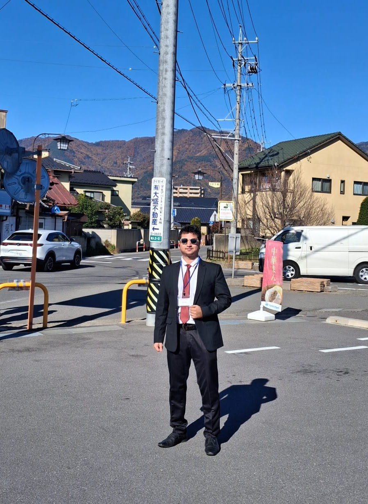
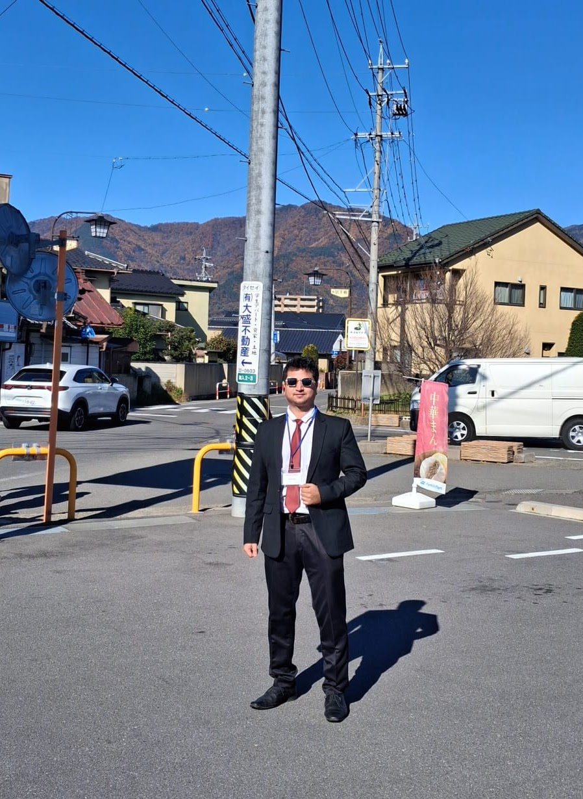

I am a PhD Research Scholar at Indian Institute of Technology Delhi, working in the interdisciplinary domain of Additive Manufacturing and Fiber-Reinforced Polymer Composites. My research focuses on exploring the relationships between process parameters, microstructure, and mechanical performance of advanced composite materials fabricated through state-of-the-art 3D printing techniques. I have been affiliated with IIT Delhi since August 2021, and my academic journey here has allowed me to blend experimental and computational methodologies to solve real-world engineering problems.
I possess hands-on expertise in advanced material characterization techniques such as X-ray micro-computed tomography (microCT), scanning electron microscopy (SEM), and various mechanical testing methods including tensile, flexural, compression, fatigue, impact, and dynamic mechanical analysis. I am passionate about applying these tools to understand internal defects, porosity, and fracture behavior of polymer composites under diverse loading conditions. I am also learning to work with ML algorithms to develop predictive models for estimating the mechanical properties of printed composites. I am open for collaboration with researchers working in ML.
My long-term goal is to contribute to the development of lightweight, high-performance materials for applications in aerospace, automotive, biomedical, and defense industries. I actively collaborate across disciplines and am driven by curiosity, scientific rigor, and a desire to innovate in the field of advanced manufacturing technologies.